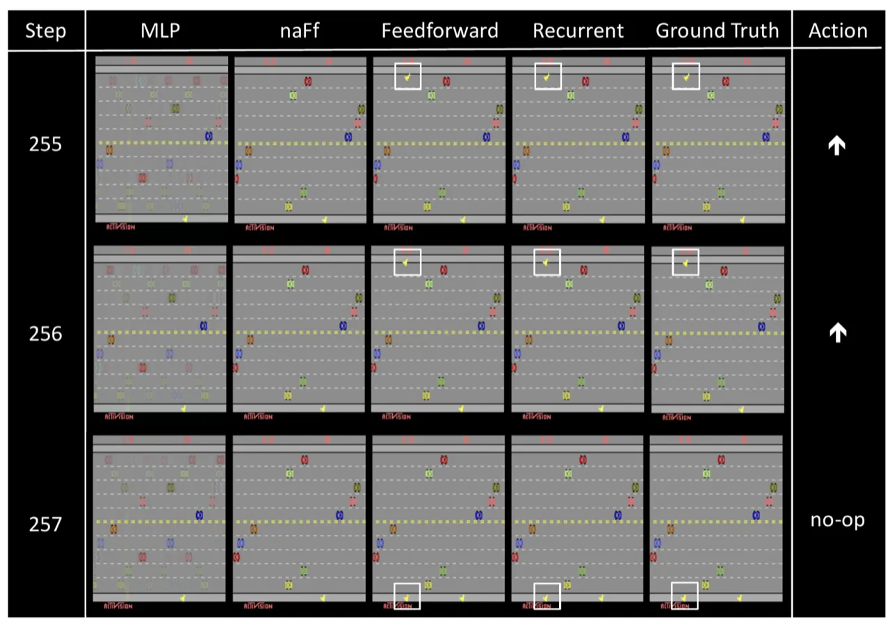
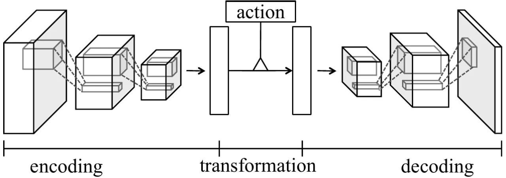
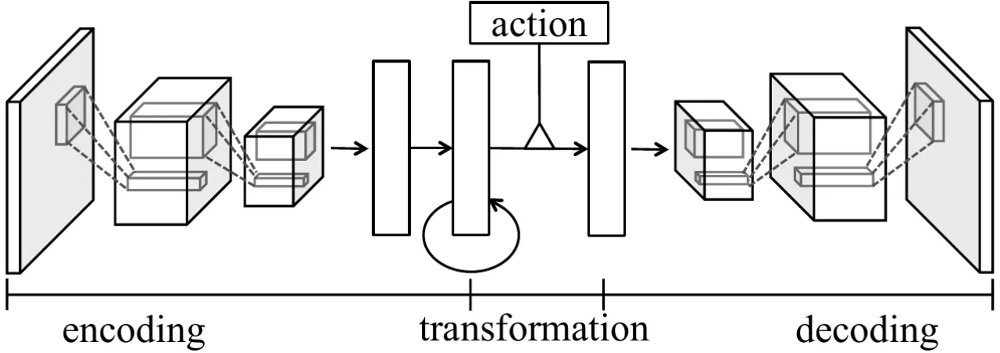
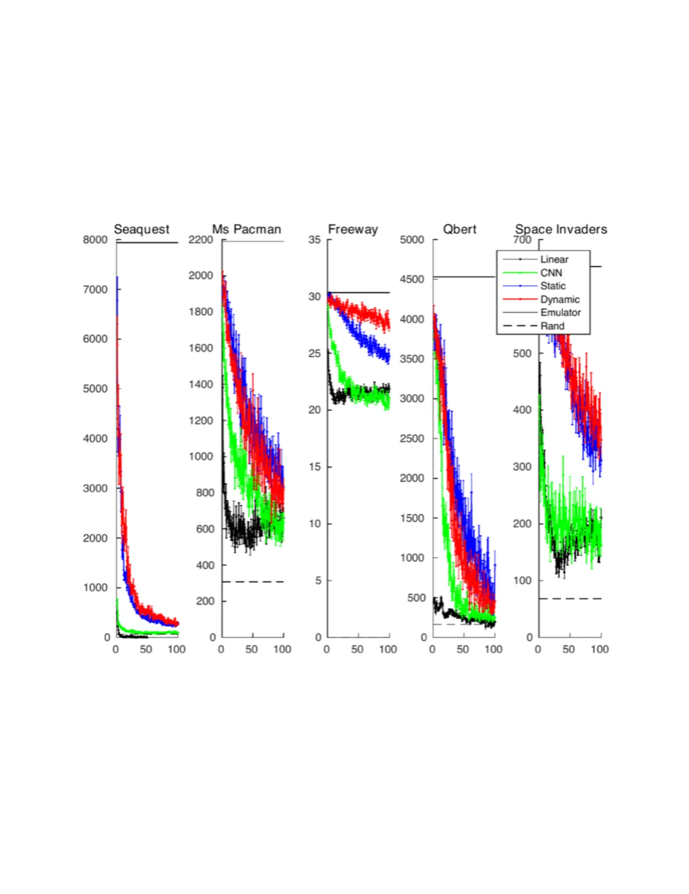
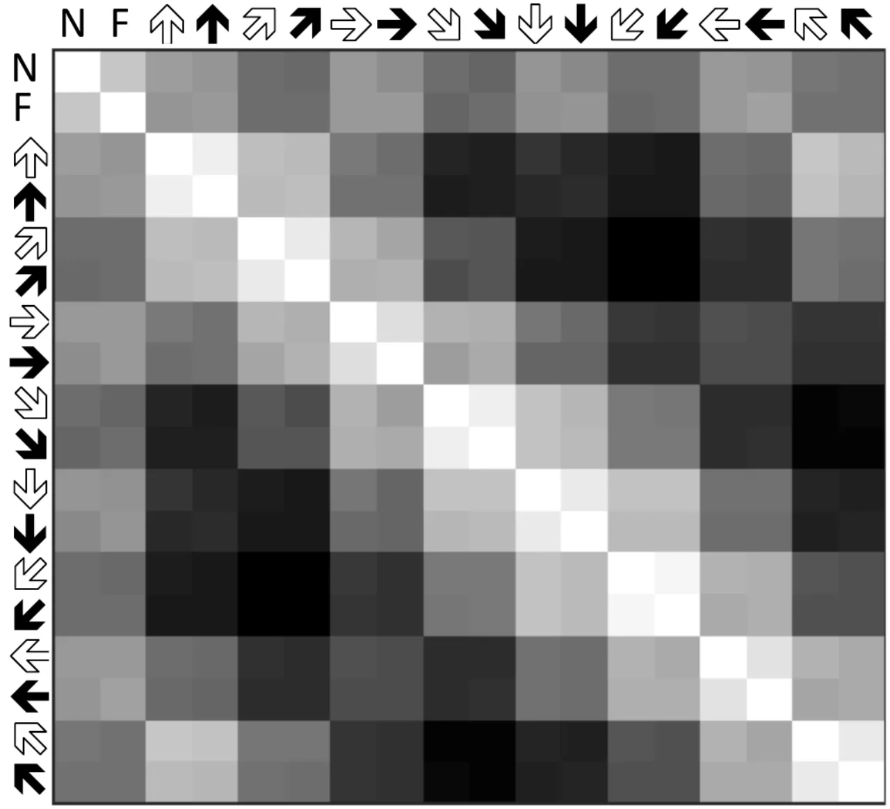
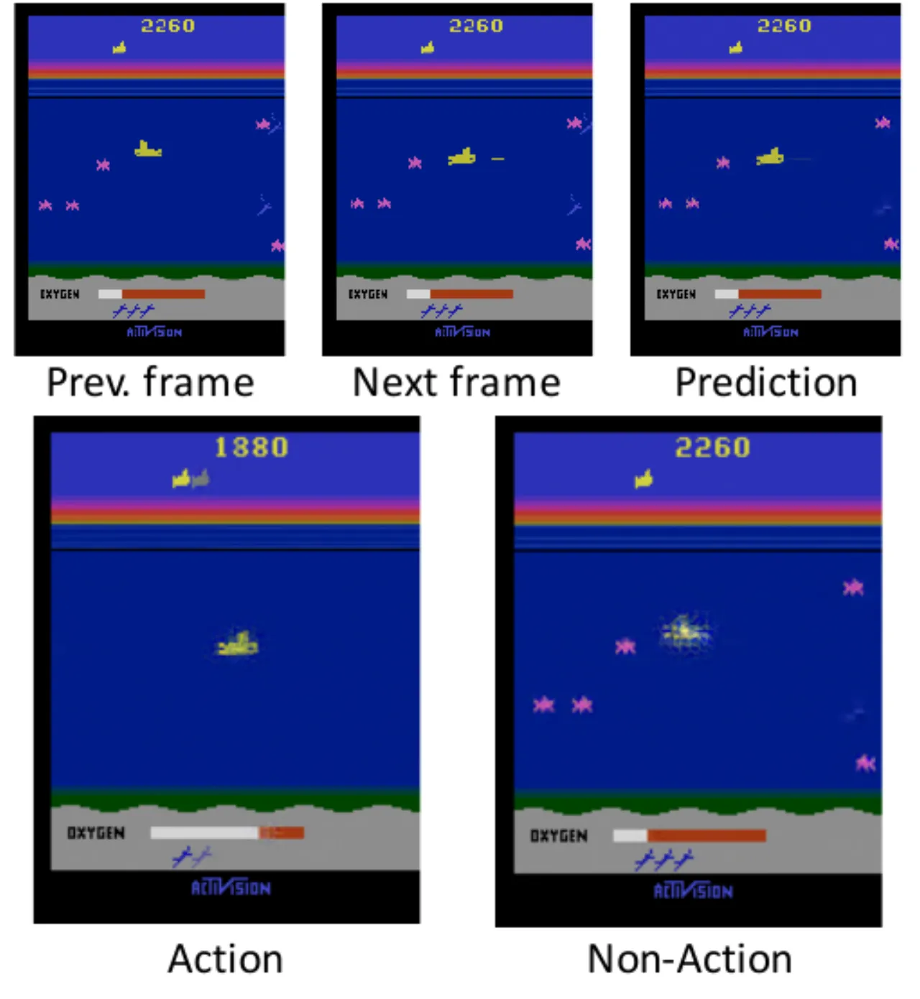

本文针对视觉强化学习问题提出两种深度神经网络架构——基于 feedforward（前馈）编码和 recurrent（循环）编码——用于预测依赖动作变量的未来游戏帧。实验表明，模型能在 Atari 游戏中生成视觉逼真、可用于控制的超 100 步预测帧，并可通过"知情探索（informed exploration）"策略改善 DQN 的训练效率。
在视觉强化学习（RL）中，智能体观察到的画面不仅取决于历史帧，还受当前动作的支配。如何在高维图像空间中建立精确的动作条件转移模型，是 model-based RL 的核心挑战之一。
"To the best of our knowledge, this paper is the first to make and evaluate long-term predictions on high-dimensional video conditioned by control inputs."
Atari 游戏提供了极具挑战性的场景：画面分辨率达 210×160 像素 RGB，场景中可能存在数十个对象，部分对象由动作直接控制，其余受间接影响；对象可随时进入或离开画面，且存在深度局部可观测性。之前的视频预测研究（如 RTRBM、LSTM 等）仅处理弹跳球或小图像块等简单情形，且忽略动作变量。本文要解决的核心问题是：

两种架构均由三个模块组成：编码层（Encoding）从输入帧提取时空特征，动作条件变换层（Action-Conditional Transformation）将特征依动作变换为下一帧的预测特征，解码层（Decoding）将高层特征反卷积回像素空间。


将最近 m 帧（本文取 m=4）按通道拼接后输入 CNN，直接从像素提取时空特征：
henct = CNN(xt−m+1:t)
卷积层使用 64×(8×8)、128×(6×6)、128×(6×6)、128×(4×4) 滤波器，步幅均为 2；后接全连接层输出 2048 维特征向量。该方案类似"early-fusion"，可精确建模局部像素级时空关系，但难以捕获超出输入窗口的长期依赖。
每步输入单帧，先用 CNN 提取空间特征，再送入 LSTM（2048 个隐藏单元）捕获任意长度时序依赖：
[henct, ct] = LSTM(CNN(xt), henct−1, ct−1)
LSTM 的记忆细胞 ct 保留来自深层历史的信息，能处理 9 步以上的长期事件（如 Space Invaders 敌人的周期性移动）。
动作变量通过乘性交互注入特征空间，避免简单拼接导致的加法独立性问题。为降低参数量，对三阶张量进行因式分解（因子数 f=2048）：
hdect = Wdec(Wenc·henct ⊙ Wa·at) + b
当动作为 one-hot 向量时，该乘性变换等价于为每个动作使用独立的权重矩阵，能够建模不同动作对应的不同变换。
变换后的特征向量经全连接层 reshape 为 128×11×8 的特征图，再经 4 层反卷积（滤波器：128×(4×4)、128×(6×6)、128×(6×6)、3×(8×8)，步幅均为 2）还原为全分辨率 RGB 图像（210×160）。反卷积比先上采样再卷积的方案更高效。
为避免 1 步预测误差在长期滚动推理中累积，采用课程学习策略，依次以 K=1、3、5 步为目标函数训练，学习率分别为 10−4、10−5、10−5：
LK(θ) = (1/2K) Σi Σt Σk=1..K ‖x̂(i)t+k − x(i)t+k‖²
每阶段迭代次数分别为 1.5×106、106、106；RMSProp（momentum=0.9）优化，batch size feedforward 网络为 32/8/8，recurrent 网络为 4/4/4。
在 5 个 Atari 游戏（Seaquest、Space Invaders、Freeway、QBert、Ms Pacman）上进行评估，训练集约 500,000 帧，测试集约 50,000 帧，使用 DQN ε-greedy 策略（ε=0.3）采集数据。图像为全分辨率 210×160 RGB，每 4 帧执行一次动作（60fps → 15fps）。对比基线：MLP（4 隐层，约同等参数量）和 naFf（无动作输入的前馈网络）。
本文两种架构在所有游戏域的 100 步 MSE 上均优于两个基线。其中与 naFf 的差距在 Seaquest 最为明显（被控对象占图像面积更大）；Space Invaders 等游戏中差距较小，原因是被控对象仅占图像的一小部分。

利用预测模型为 ε-greedy 策略中的探索动作提供信息：在随机动作选择时，改为选择预测帧与最近 d 帧轨迹记忆中最少出现相似帧的动作（用 Gaussian kernel 估计访问频率）。训练了专用的灰度/下采样（84×84）前馈网络提升计算效率。
| 模型 | Seaquest | S. Invaders | Freeway | QBert | Ms Pacman |
|---|---|---|---|---|---|
| DQN - Random exploration | 13119 (538) | 698 (20) | 30.9 (0.2) | 3876 (106) | 2281 (53) |
| DQN - Informed exploration | 13265 (577) | 681 (23) | 32.2 (0.2) | 8238 (498) | 2522 (57) |
知情探索在 3/5 个游戏中提升了 DQN 性能，QBert 提升最显著（3876→8238）。括号内为标准误差，数据来自 100 局游戏。


"Both of our models have difficulty in accurately predicting small objects, such as bullets in Space Invaders. The reason is that the squared error signal is small when the model fails to predict small objects during training."——以 MSE 为损失函数时，小对象的像素误差对总损失贡献极小，导致模型缺乏充足的学习信号。
"In Seaquest, e.g., new objects appear from the left side or right side randomly, and so are hard to predict. Although our models do generate new objects with reasonable shapes and movements…the generated frames do not necessarily match the ground-truth."——随机出现的对象（如敌方潜水艇）无法被确定性模型精确预测，生成结果在形状和运动方向合理，但位置不一定与真实帧吻合。
"[Feedforward architecture] is not suitable for long-term dependencies because it requires more memory and parameters as more frames are concatenated into the input."——在 Freeway 等游戏中，当智能体进入新阶段后动作被忽略 9 步，前馈架构因输入窗口仅为最近 4 帧而无法建模这一长期状态，导致在该场景下发生错误预测（diverge）。
论文结论中指出："In future work we will learn models that predict future reward in addition to predicting future frames and evaluate the performance of our architectures in model-based RL."——当前架构仅预测像素帧，尚未整合奖励信号预测，因此不能直接支撑完整的 model-based RL 规划。
所有实验均限于 Atari 游戏（非自然场景，分辨率 210×160）。更高分辨率、更复杂动态（如自动驾驶第一视角）中的泛化能力未经验证。